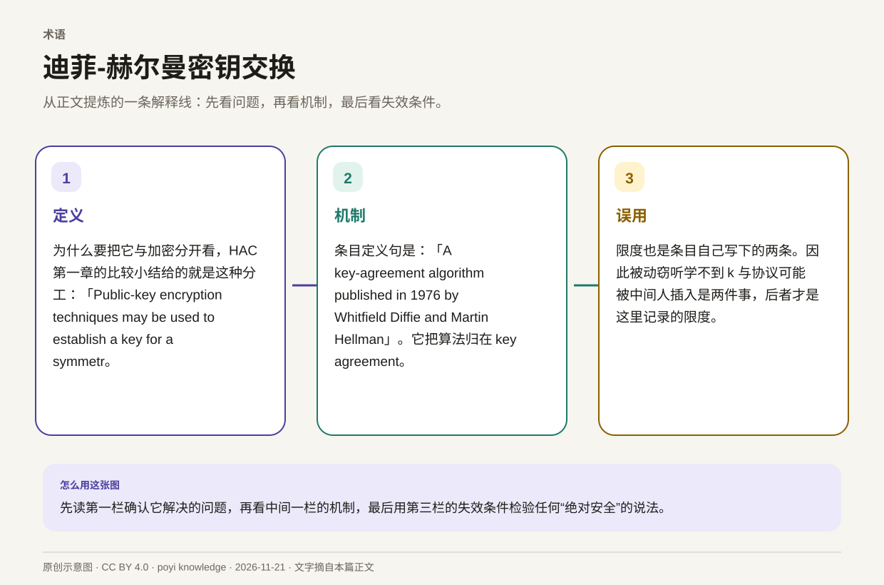

原理与机制
术语：迪菲-赫尔曼密钥交换（Diffie-Hellman Key Exchange）。条目定义句是：「A key-agreement algorithm published in 1976 by Whitfield Diffie and Martin Hellman」。它把算法归在 key agreement 这一类下，并在教程段把机制说清：双方共同选出满足某些数学条件的大整数，各自算出一对公钥私钥并交换公钥，然后「to compute a key, k, that, because of the mathematics of the algorithm, is the same for each of them」（用各自的私钥与对方的公钥算出密钥 k，并且由于算法的数学结构，两边算出的 k 是同一条）。

为什么重要
为什么要把它与加密分开看，HAC 第一章的比较小结给的就是这种分工：「Public-key encryption techniques may be used to establish a key for a symmetric-key system being used by communicating entities A and B.」同段接着说明这样能同时享受公钥密钥的长期性与对称方案的性能优势，并且由于数据加密通常是整个过程中最耗时的部分，用于密钥建立的公钥方案只占总过程的一小部分。这一段的说法是通用形的（它讲的是公钥技术如何为对称系统建立密钥），该条目把它作为为什么该算法被归到密钥建立的旁证使用，而不是当作对该算法本身的定义。
应用与实例
用法边界写在教程的第一句：「Diffie-Hellman-Merkle does key establishment, not encryption.」条目随即说明它产出的密钥可以用于加密、用于后续的密钥管理操作，或用于其它密码用途；并且「Passive wiretapping cannot learn the shared k, because k is not transmitted」（被动窃听学不到这把共享密钥，因为 k 不在网络上传输），计算 k 所需的私钥同样不在网络上传——这三点共同划定它的用途：建立一把共享密钥，而不是承载数据。
边界与攻击面
限度也是条目自己写下的两条。其一是计算困难度假设：「The difficulty of breaking Diffie-Hellman-Merkle is considered to be equal to the difficulty of computing discrete logarithms modulo a large prime.」——安全性依赖的是被认为相等这一困难度假设，而非已证的归约。其二在协议层：条目接着警告：「without additional mechanisms to authenticate each party to the other, a protocol based on the algorithm may be vulnerable to a man-in-the-middle attack」（若没有额外机制让双方彼此认证，基于该算法的协议可能易受中间人攻击）；因此被动窃听学不到 k 与协议可能被中间人插入是两件事，后者才是这里记录的限度。
历史与背景
版本与命名事实（按项目口径写在引号之外）：留存件把 Diffie-Hellman 与 Diffie-Hellman-Merkle 作为并列词头印出、共用同一条定义，该定义标为 (N)；按同一文档 §3.2 的图例，(N) 表示「Recommended Definitions of Non-Internet Origin」（非互联网来源的推荐定义；Origin 取 N 而非 I，Recommendation 取 N 而非 O），与本版新增无关，该条目也不这样解释它。定义句把发表年记为 1976、作者记为 Whitfield Diffie 与 Martin Hellman；Usage 段说明该算法通常被称作 Diffie-Hellman，并转述 Hellman 在其 IEEE Communications Magazine（1978 年 11 月）文章中的主张：应称 Diffie-Hellman-Merkle、以承认「Merkle's equal contribution to the invention of public key cryptography」（Merkle 对发明公钥密码的同等贡献）。该段自身带嵌套引号与一处省略号，该条目只引省略号之后这一句干净的从句。文件头部信息（RFC 4949、August 2007、作者 Shirey）按口径另述。
逐步示例与核验
定义检查模型
上位概念 → 区别特征 → 正例 → 反例 → 易混边界。正例必须落在外延内；反例必须刚好跨过边界；同义词不能代替定义。
参考出处
- Wikipedia search entry for 迪菲-赫尔曼密钥交换. https://zh.wikipedia.org/w/index.php?search=%E8%BF%AA%E8%8F%B2-%E8%B5%AB%E5%B0%94%E6%9B%BC%E5%AF%86%E9%92%A5%E4%BA%A4%E6%8D%A2
- RFC 4949: Internet Security Glossary, Version 2. https://www.rfc-editor.org/rfc/rfc4949